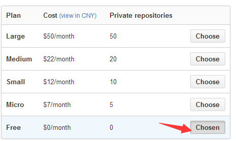
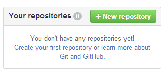
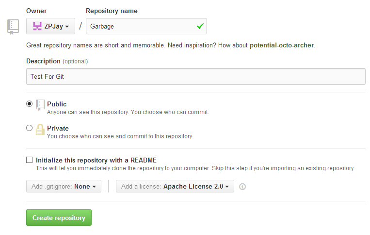
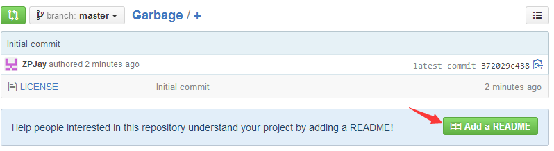
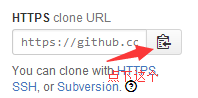
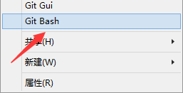
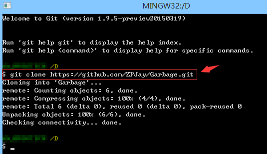
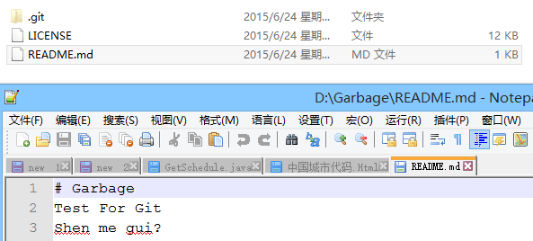

Introduction to this section:
In the previous section, we learned how to use Git to set up our local repository, easily implementing version control, code restoration, modification log viewing, etc. Readers are definitely not satisfied with just using it locally, right? What if multiple people develop a program together? We need a remote repository as a server! Of course, setting up a server costs money. Why not host the project on GitHub? As an open-source code library and version control system, GitHub has more than 1.4 million developer users. As more and more applications move to the cloud, GitHub has become the preferred method for managing software development and discovering existing code. It costs nothing, so why not use it? Right? This section will teach us how to host our code on GitHub!
1. Account registration & repository creation:
Open the GitHub official website to register:GitHub official website, fill in the registration information: username, email, password
After registering, you will be redirected to the following page to choose the repository purchase plan (private repositories are inaccessible to others and require permissions). Generally, if we are just playing around, we choose Free: PS: By the way, you may receive a verification email at this time; click it to complete verification.

Next, create a code repository:


Add some content hints to your repository, that is, a brief overview of the project (optional).

Briefly introduce some things on the homepage:

2. Clone the code repository to your local machine
Of course, you can clone directly using the graphical interface, but I still prefer to clone via the command line. First, copy the clone address.

Then somewhere, right-click to open Git Bash:

Type:
git clone https://github.com/ZPJay/Garbage.git
Then you can see that our code repository has been downloaded:

Open the folder, and you can see the following content:

3. Branch management
For friends who are new to version control tools, branches may be unfamiliar, but they bring us great convenience! Due to space limitations, the author just drops a link; you will understand by looking at the diagrams:Liao Xuefeng's official website: Creating and merging branches! It is really well written~ Recommended to bookmark!
After understanding the concepts, let's become familiar with a few commands related to branches:
① Create a branch (the latter also switches branches upon creation):
git branch v1.0.3 或 git checkout -b v1.0.4


② View all branches in the repository:
git branch -a

③ Switch to a branch:
git checkout v1.0.3

④ Delete a branch:
git branch -D v1.0.4
⑤ Merge branches
git merge v1.0.3

4. Synchronizing local and remote repositories
The branch operations we have performed so far were all carried out locally. Since we host our project on GitHub, we definitely need to communicate with the remote repository, right? Earlier we tried using the clone command to download the project to our local machine. So after we make changes, how do we sync the code to GitHub? First, make a small change to our local repository, then do git add and git commit to prepare locally, and then:
git push origin master 或者直接 git push
Push our local content up:

Then take a look at our GitHub, and you can see that the content has changed, and the committer is another account of mine!

If there is syncing to the server, there must be syncing from the server to the local machine, right? It's very simple, just one
git pull
command is enough.
5. Summary of this section
Okay, that's all for this section. I believe you have seen in the Git tutorials above some advanced Git usages such as conflict resolution, branch management, bug branches, etc. Considering this is an introductory tutorial, I won't go into depth. If you are interested, you can learn more on your own. Let me talk about the current situation at my company: ① Use GitHub as our project management tool: We host our projects on GitHub, and there are two branches: development and testing, one branch per version, and only when releasing do we merge the branch into master! Bug reports are also submitted there, which is quite convenient! ② Use Trello for process control, which is also simple and efficient! If interested, you can learn more about it! In addition, accessing GitHub from China may be relatively slow, and private repositories require payment. If your company doesn't use a proxy or you are an individual developer, it may be a bit useless. However, you might consider using a domestic open-source repository: Git@OSC, provided by OSChina, which offers 1000 private repositories, it seems. It feels pretty good. If interested, you can consider hosting your code here:http://git.oschina.net/! That's all for now. If there are any errors or omissions in the article, please point them out. Thanks~